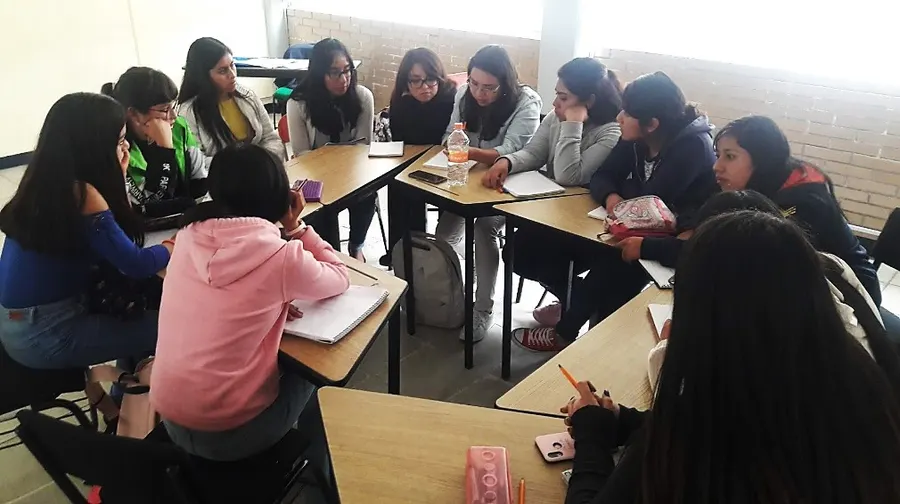

Quiénes somos
El semillero de investigación en motricidad está conformado por un grupo de docentes y estudiantes que buscan incorporar la investigación formativa al currículo. Parten de procesos pedagógicos en los que se reflexiona sobre las prácticas corporales en el marco de la educación física, la recreación y el deporte, entendiendo el cuerpo como una construcción social y cultural capaz de expresar y comunicar con sentido.
Se fortalecen así los procesos intersubjetivos que hace posible el encuentro con otros y con sus saberes. Es una manera de explorar el potencial del ser humano y proyectarlo en aportes epistemológicos, pedagógicos, sociales y artístico-culturales, que se reflejan en la formación, la investigación, la extensión y la apropiación social del conocimiento.
Participan estudiantes y docentes de las licenciaturas en educación física, recreación y deporte, y de profesional en deportes.
